ABOUT CEADESIGN
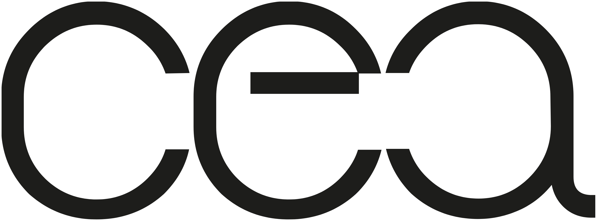
目录
01 开篇
一家做水龙头的公司，产品目录里有一台直径 2100 毫米的吊扇：电机外壳用 AISI 316L 不锈钢车出来，三片修长的叶片由碳纤维与橡木或胡桃木薄板交替叠成，运转时还能电离净化空气、提供 3000 开尔文的漫射照明，并播放音乐。它叫 ARIACHIARA，来自意大利维琴察省的 CEADESIGN。
这台风扇并不是品牌的越界尝试，而是它产品逻辑的自然延伸：公司把自己定义为"水与空气"的空间设备商，四条产品线分别覆盖卫浴、厨房、户外与通风。支撑这四条线的是同一种材料——AISI 316L 不锈钢，以及同一套精密机械加工能力。它最早的产品 CUT 在 1998 年由建筑师与设计师合作完成，2004 年进入金圆规奖评选并拿到红点设计奖，至今仍在更新销售。
要看懂这家企业，需要回答三个问题：为什么它把全部筹码压在不锈钢上；为什么它愿意做那些看起来不属于龙头厂的产品（集成卫浴系统、电热毛巾架、吊扇、出水即饮的气泡水龙头）；以及一家 1984 年从水暖与供暖起步的家族企业，如何把自己变成建筑师与设计师的长期供应商。
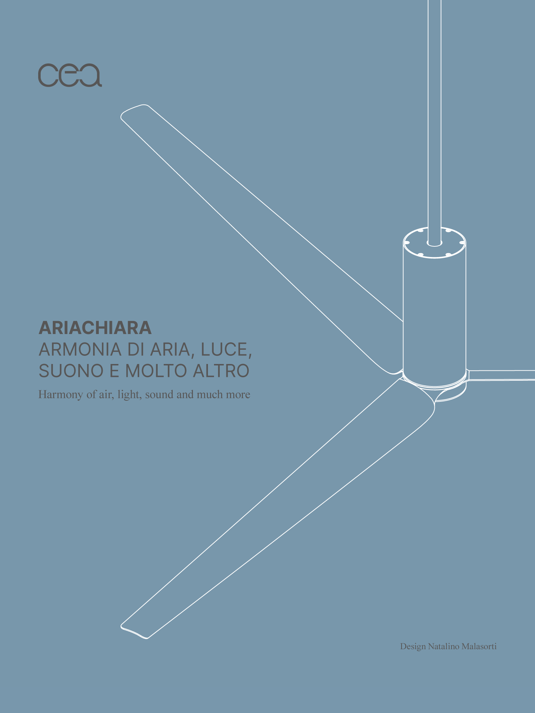
图：ARIACHIARA 吊扇，电机外壳为 AISI 316L 不锈钢，叶片由碳纤维与木质薄板叠合。图源：CEADESIGN 官网产品页（ARIACHIARA）。
02 品牌概述
CEADESIGN 是意大利高端设计龙头与卫浴设备制造商，1984 年起步于水暖与供暖行业，随后转向设计龙头的生产，生产与总部基地位于威尼托大区维琴察省的 Pove del Grappa，处在以金属加工闻名的巴萨诺-德尔格拉帕产业区。它的核心是用同一种材料（AISI 316L 不锈钢）与同一套精密机械能力，覆盖卫浴、厨房、户外与通风四类产品，并把技术功能尽量收进简洁的形体之内。
| 项目 | 内容 |
|---|---|
| 品牌名 | CEADESIGN · https://www.ceadesign.it |
| 国家/地区 | 意大利（威尼托大区，维琴察省 Pove del Grappa；米兰、根特、科尔蒂纳、纽约设有展厅） |
| 成立时间 | 1984 年（初期从事水暖与供暖，后转向设计龙头制造） |
| 创始人 | Natalino Malasorti 与 Roberta Bertacco（夫妻团队）：Malasorti 负责产品设计与技术，Bertacco 负责商业增长 |
| 代表性设计人物 | Natalino Malasorti（艺术总监、设计师、技术负责人，ABACO／EQUILIBRIO／ARIACHIARA／ENDLESS 等）；内部团队 CEADESIGN Studio；外部合作设计师 Parisotto + Formenton（HOOK）、Glenn Sestig（SIXTY）、Yabu Pushelberg（AYLA）、CMP Design（CARTESIO）、MAO Architects（ATOLL）、Mario Tessarollo 与 Tiberio Cerato（CUT，1998） |
| 其他关键人物 | Roberta Bertacco（现任董事总经理，对外表述公司可持续与材料选择） |
| 官方理念 | "NATURALMENTE ACCIAIO"（自然地，不锈钢）；AISI 316L 不锈钢为唯一主材；"Made in Italy" 生产 |
| 品牌归属 | 独立家族企业（CEADESIGN S.r.l.，税号 01628190249，注册资本 7.6 万欧元，REA VI 173914） |
| 核心业务 | 卫浴龙头与淋浴系统、浴室集成模块系统、电热毛巾架、厨房龙头（含过滤水、沸水与气泡水）、户外淋浴与花园龙头、通风设备（吊扇）、卫浴配件与洗手盆 |
| 经典产品 | CUT（1998；金圆规奖 2004 入选、红点设计奖 2004）、ABACO（2018）、EQUILIBRIO（2019）、HOOK（2018/2021）、ARIACHIARA（2019/2022）、SIXTY（2023）、AYLA（2024）、ETW（2025）、ENDLESS／ATOLL／ALLURE（2026） |
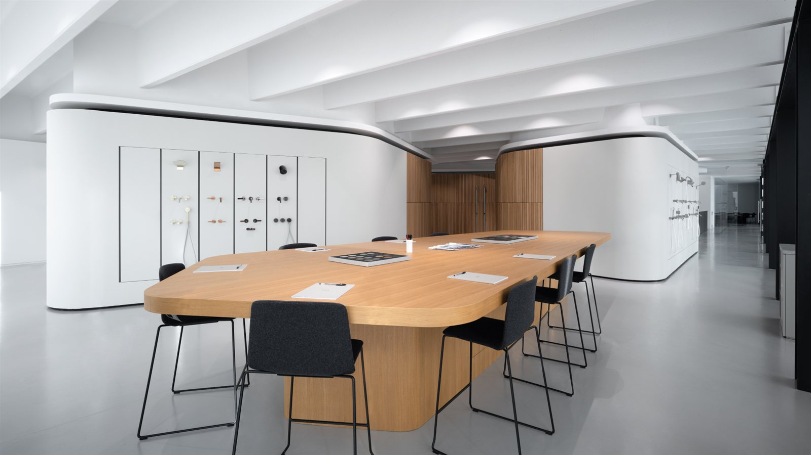
图：位于 Pove del Grappa 的公司总部与生产空间。图源：CEADESIGN 官网公司页。
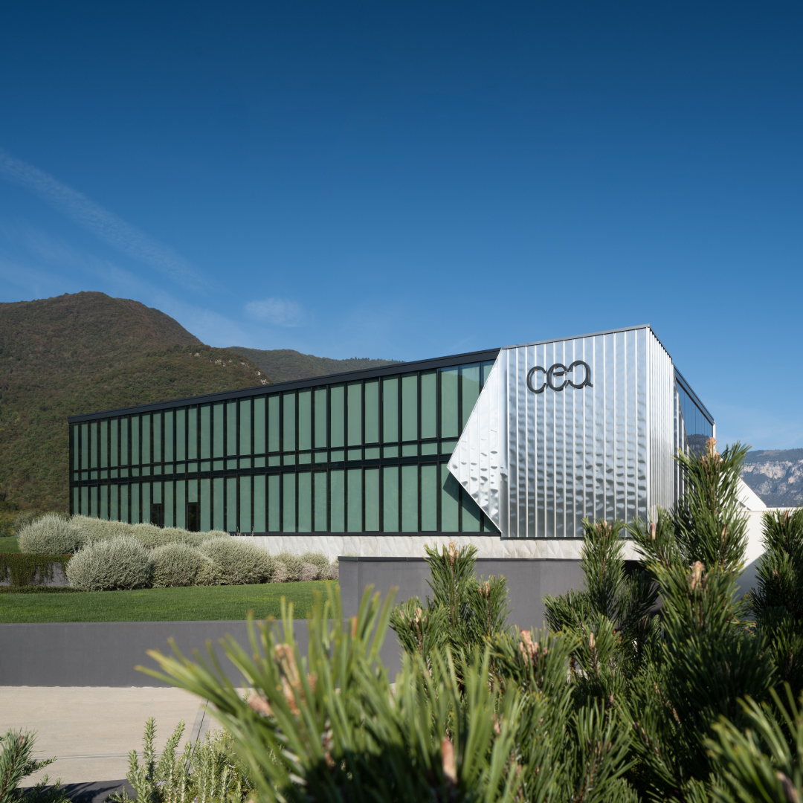
图：总部与生产空间（另一视角）。图源：CEADESIGN 官网公司页。
03 Brand 品牌：从水暖作坊到不锈钢龙头专家
1984 年：从水暖与供暖起步
公司的起点并不是设计，而是工程管道。官网的记录是：CEADESIGN 于 1984 年在卫浴设计与技术开发领域起步，最初从事水暖与供暖行业，之后才进入面向住宅的设计龙头制造。这段经历留下了两样东西：一是对水路、密封与控制机构的理解，二是与金属加工供应链的关系。两者共同构成了后来"做别人做不了的结构"的基础。
两位创始合伙人是一对夫妻：Natalino Malasorti 是有远见的企业家，同时担任品牌的艺术总监、设计师与技术负责人；Roberta Bertacco 负责公司的商业增长与品牌事务。这种"设计、技术、商业由创始层直接分工"的结构延续至今，也解释了品牌为什么能在产品上持续做技术加法，而不只是更换外形。
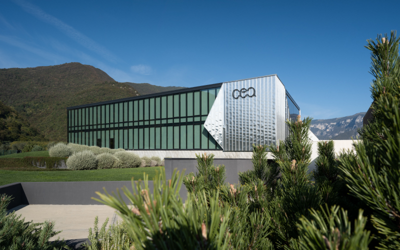
图：公司总部办公楼外观。图源：CEADESIGN 官网公司页。
1998 年：CUT 与两个设计奖
1998 年，公司推出了 CUT 系列，合作者是与建筑师、设计师 Mario Tessarollo 与 Tiberio Cerato。CUT 的设计语言是直线与圆柱的削减：把多余的元素去掉，只保留功能必需的体块。这款产品后来获得了 2004 年金圆规奖（Compasso d'Oro）评选入围与 2004 年红点设计奖（Red Dot Design Award），并拥有三项专利（工业发明、装饰与实用新型）。官方在介绍 CUT PLUS 时说，它"二十多年来一直是龙头领域优雅与简洁的标志"。
这段经历确立了品牌的两条规则：产品必须建立在可申请专利的技术上；设计必须由外部专业人士参与验证。
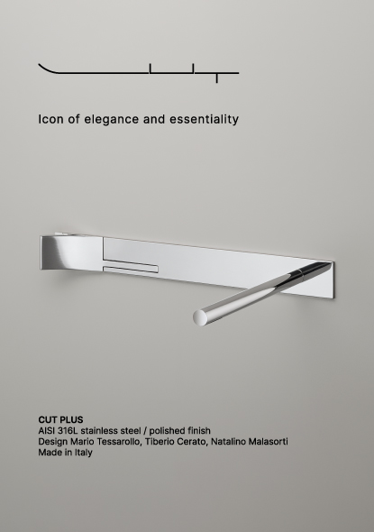
图：CUT PLUS 系列龙头的直线体块与操作方式。图源：CEADESIGN 官网产品页（CUT PLUS）。
2016–2019 年：展厅与国际化
2016 年，公司在米兰布雷拉区 Via Brera 9 开出第一家品牌展厅 CEA MILANO，把产品放进设计城市的核心；2018 年参加布鲁塞尔 Biennale Interieur 与莫斯科 Arch Moscow；2019 年在比利时根特开出第二家展厅 CEA GHENT，为北欧市场提供展示与设计咨询。这些动作的意图很清楚：把销售从"经销商货架"转向"与建筑师共同做方案"。
2018–2022 年：集成系统与技术产品的密集期
这一阶段的产品密度最高。2018 年的 ABACO 把卫浴功能集成进一个模块化体块，并在同年获得 Archiproducts Design Awards 卫浴类奖项；2019 年的 EQUILIBRIO 把电热毛巾架做成 24 伏低压模块化产品；2021 年的 HOOK 由 Parisotto + Formenton 与 Malasorti 共同设计，获得 Archiproducts Design Awards 2021 与可持续特别提名；2022 年官方介绍 ARIACHIARA，把吊扇做成结合空气分层、净化、照明与声音的设备。
2023–2026 年：设计师合作与产品线扩张
2023 年与比利时建筑师 Glenn Sestig 合作的 SIXTY 系列上市并获 Archiproducts Design Awards 2023；2024 年与 Yabu Pushelberg 合作的 AYLA 系列上市并获 2024 年同类奖项，同年科尔蒂纳展厅开幕；2025 年推出 ETW（出水即饮系统，涵盖过滤水、沸水与气泡水）并获 2025 年 Archiproducts Design Awards；2026 年米兰设计周期间发布 ENDLESS 洗手盆系列、ALLURE 龙头与 ATOLL 厨岛，并出版第 17 期品牌杂志 CEAlab。
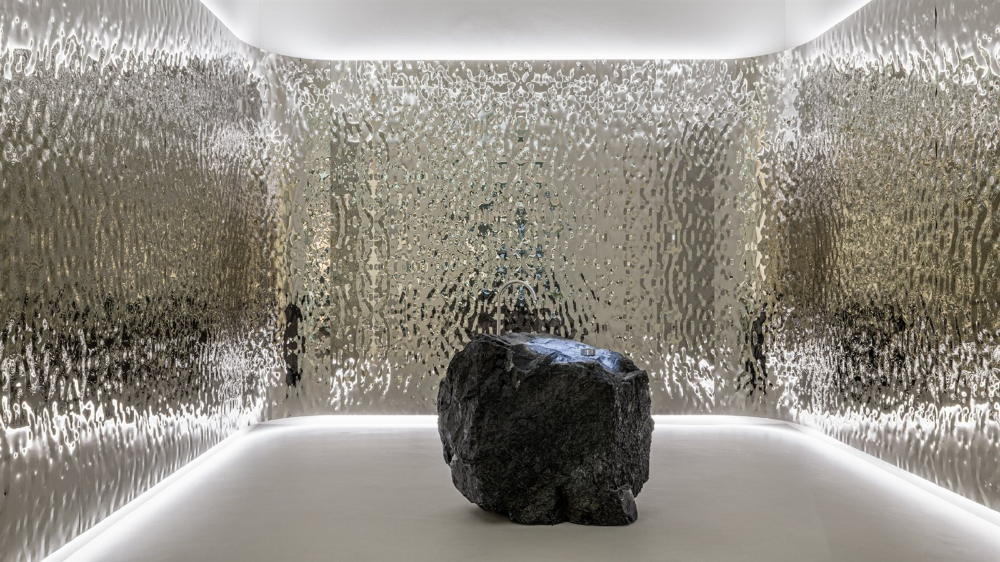
图：位于米兰 Via Brera 9 的品牌展厅 CEA MILANO。图源：CEADESIGN 官网公司页。
04 Category 品类与市场：设计龙头的牌桌与口径
品类的定义与边界
CEADESIGN 所处的品类通常被称作"设计龙头"（design tapware），但它实际横跨四个相邻品类：卫浴龙头与淋浴系统、厨房水系统、户外淋浴与花园龙头、以及室内通风设备。这几个品类的共同点是"与水、空气、电的控制有关"，共同的技术底座是精密机械加工与流体控制。
品类的上游是金属加工：不锈钢或黄铜的棒材、管材，经车削、铣削、弯管、焊接、抛光与表面处理，再配合阀芯、密封件与电子模块。下游是建筑与室内项目：产品在图纸阶段被建筑师指定，在竣工后由使用者每天触摸。这决定了它的竞争不只在参数上，也在"能不能被写进方案"这一层。
市场规模的判断口径
设计龙头属于卫浴五金中的高端细分，缺少公开的独立统计口径：意大利与欧洲的行业统计通常以"卫浴陶瓷与五金"或"建筑五金"整体归类，不单列设计龙头。因此本节不引用市场规模数字，只说明可核查的企业层面事实。
可以确认的口径有三组。第一是认证覆盖：公司公开列出 ISO 9001 与 ISO 14001 体系认证，以及面向不同市场的产品认证体系，包括欧洲的 WRAS（英国）、DVGW（德国）、SVGW（瑞士）、Belgaqua（比利时），北美与加拿大的 UL、CSA、WaterSense，澳洲的 Watermark、WELS，中国的中国水效标识（China Water Efficiency Label），以及 EAC、CB、SVES 等；商标注册覆盖欧盟、英国、瑞士、俄罗斯、乌克兰、白俄罗斯、格鲁吉亚、美国、加拿大、墨西哥、中国、以色列、印度、日本、韩国、新加坡、新西兰等 17 个法域。第二是渠道：品牌展厅分布在米兰、根特、科尔蒂纳与纽约，另有多国的授权经销商网络。第三是媒体存在：官网的媒体评述栏目在 2026 年收录了包括 Wallpaper*、Domus、AD、Elle Decor、Interior+Design、Vogue Living Australia、SALA BAÑO 在内的数十家专业与消费媒体的报道条目。
价格带与产品分层
公司不公开价目表，产品按项目报价。从其产品结构可以判断价格带位置：全线使用 AISI 316L 不锈钢（材料成本高于常规黄铜牌号的常见做法）、特殊饰面需要额外工艺、多数产品需要与其他部件配合安装（预埋件、恒温模块、低压电源），因此它处在设计龙头市场的最高区间。品牌的分层方式是功能与复杂度，而不是价格：CUT、MILO360 等系列承担覆盖面，AYLA、SIXTY 等设计师合作系列承担形象，ABACO 与 ETW 承担技术旗舰角色。
技术趋势与品类变化
过去十五年，这个品类出现了六条清晰趋势，CEADESIGN 在产品上都有对应动作。第一是材料升级：不锈钢从"工程材料"变成"高端设计材料"，因为它的耐腐蚀、抗菌与可回收属性同时满足健康与可持续诉求。第二是无铅与卫生：与饮用水接触的部件越来越强调安全材料与易清洁结构。第三是节水与认证：WaterSense、WELS 与中国水效标识等制度把节水变成准入门槛。第四是厨房功能化：过滤水、沸水、气泡水集成为一个出水系统，替代多台电器（ETW）。第五是电子化：恒温、感应与低压电气成为常规选项（EQUILIBRIO 使用 24 伏低压供电）。第六是户外场景扩张：户外淋浴与花园龙头从功能件变成景观元素。
渠道结构
品牌的渠道由三层构成：四家品牌展厅（米兰、根特、科尔蒂纳、纽约）承担展示与设计咨询；各国经销商承担本地销售与安装支持；设计平台与展会承担专业触达，包括 Archiproducts、Archilovers、Edilportale、Archello 与 ArchiExpo 等平台，以及 ISH、Salone del Mobile／米兰设计周、Architect@Work、ARTDOM、Biennale Interieur、Arch Moscow、100% Design London 等展会。
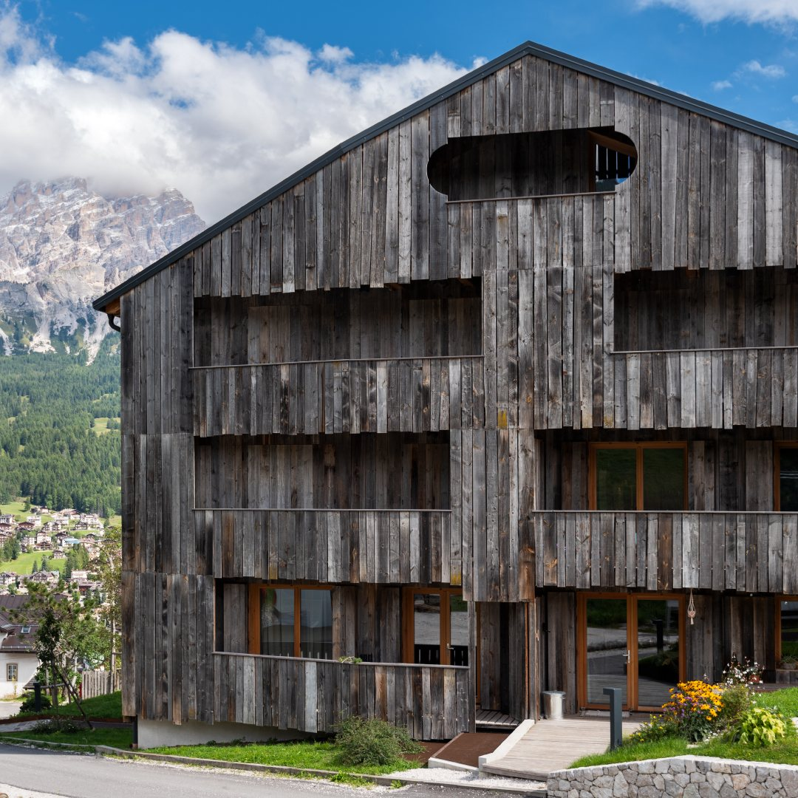
图：2024 年在安佩佐多洛米蒂开出的 CEA CORTINA 展厅。图源：CEADESIGN 官网公司页。
05 User 用户与场景：谁在决定一个水龙头
决策链：设计师、业主、经销商与工程方
高端龙头很少由使用者单独决定。典型的链条是：建筑师或室内设计师在方案阶段确定产品系列与安装方式；业主确认预算与风格；经销商完成配置、报价与交付；安装方与总包负责预埋件、水压与电气条件。CEADESIGN 的产品设计对这种结构做了三点回应：产品按项目配置（同系列提供多种安装方式与出水形式）、提供预埋件与内置部件（Built-in parts）以便与土建同步、并保留项目咨询通道（官方为 ABACO 系统专设项目邮箱，面向建筑师与室内设计师）。
用户分层与核心任务
按任务划分，品牌面对四类客户。第一类是高端私人住宅的业主与设计师，要解决的是"每天触摸的物件必须耐用、好清洁、外观与空间一致"；第二类是酒店与餐饮项目，关注的是批量一致性、维护效率与合规认证；第三类是公共与文化建筑，如博物馆与历史建筑的更新，要求在形制克制的前提下满足现代设备标准；第四类是游艇与移动空间，对材料耐蚀性、重量与安装条件的要求最严格。
术语注释：JTBD——用户任务，指用户"雇佣"一件产品去完成的具体事情。
从 JTBD 的角度看，CEADESIGN 的产品承担三类任务：取水与用水（龙头、淋浴、出水系统）、把设备藏进空间（预埋与集成系统）、维持空间的物理品质（通风、空气净化、干燥、照明）。
场景与项目案例
品牌公开的项目覆盖六个类别：住宅、多户住宅、酒店、餐厅、博物馆与游艇。几个案例足以说明它的客户结构。
位于维罗纳的 Museo di Castelvecchio 是卡洛·斯卡帕（Carlo Scarpa）1964 年修复工程的续作对象：项目针对东翼未完成部分，官方把概念概括为"对话"。米兰 Via Senato 22 号的 Senato Hotel 由建筑师 Alessandro Bianchi 将一座新古典主义建筑改造成精品酒店，立面与室内的银杏叶图案成为标识。西班牙阿利坎特的 Morning Breeze Villa 由建筑师 Monica Armani 设计，入口玻璃幕墙高逾 7 米。曼哈顿 152 Elisabeth Street 由安藤忠雄参与设计、Michael Gabellini 负责室内，把车库改造成七套住宅。蒙特利尔的 Ave Duchastel Residence 由 Atelier Chardonnat 与 Salem Architecture 完成，改造一栋受弗兰克·劳埃德·赖特影响的住宅。
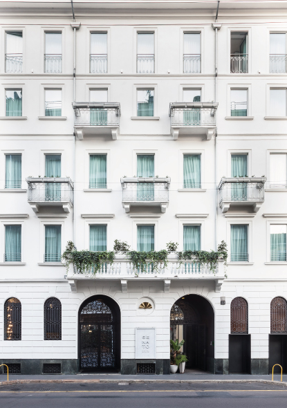
图：米兰 Senato Hotel 项目，由建筑师 Alessandro Bianchi 将新古典建筑改造为精品酒店。图源：CEADESIGN 官网案例页。
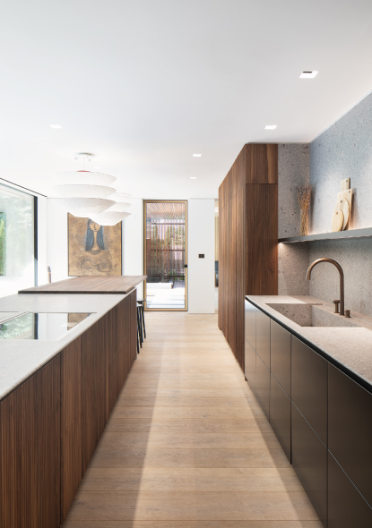
图：蒙特利尔 Ave Duchastel Residence 项目内景。图源：CEADESIGN 官网案例页。
游艇是另一条专业线：Baglietto T52（52 米混合动力游艇，Francesco Paszkowski Design 设计）与 Mylius 50／65、Dolly Dominator 800 等项目都使用品牌产品。这类项目的意义在于验证材料：海水环境对金属件的腐蚀要求，把"316L"从一个参数变成了可核查的性能优势。
术语注释：contract——面向酒店、办公、住宅开发与游艇等项目的定制供货渠道。
购买与使用入口
术语注释：CEP——购买与使用入口，指触发用户进入某个品类的具体情境。
按 CEP 梳理，触发品牌生意的入口有六类：新建或翻修的住宅卫浴与厨房、酒店与餐饮工程、公共建筑与文化遗产更新、游艇与高端移动空间、户外泳池与露台项目、以及通过设计媒体与展会形成的设计师指定。品牌在最后一项上投入明显：2026 年的媒体评述收录了数十家媒体的报道，覆盖从 Wallpaper*、Domus 到各国卫浴垂直媒体的完整梯度。
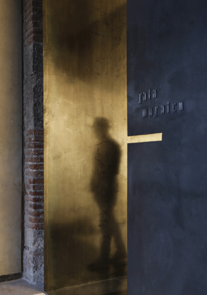
图：维罗纳 Museo di Castelvecchio 项目，续作卡洛·斯卡帕未完成的东翼修复。图源：CEADESIGN 官网案例页（Inspirations）。
06 Positioning 定位：把水与空气做成设备
参照系与目标人群
CEADESIGN 的参照系不是"五金货架"，而是"建筑里的水与空气设备"。这一点可以从它的产品分类直接读出：卫浴、厨房、户外、通风四条线并列，而不是按产品的物理形态分类。参照系一旦换成设备，评价标准就从"造型好看"扩展到安装方式、耐蚀性、清洁便利、节水认证与维护寿命。
目标人群因此明确：愿意为材料与机构付费的建筑师、室内设计师、高端业主与工程方。品牌把设计咨询与展厅放在米兰布雷拉、根特、科尔蒂纳与纽约，也说明它选择用"面对面讲解技术"的方式销售，而不是依靠零售货架。
差异点与基准点
术语注释：POD——差异点，指品牌相对竞品被感知到的独特优势。
差异点有五条，都能落到证据上。第一是材料单一性：全线以 AISI 316L 不锈钢为主材，官方把它概括为"NATURALMENTE ACCIAIO"，并强调其 100% 可回收、耐久、抗菌与耐外部介质。第二是精密机构能力：CARTESIO 的直角出水嘴在弯折处使用微切口减料工艺，CUT PLUS 用新的混水概念实现"设定温度后单一动作调节流量"，这些都属于加工与机构层面的差异。第三是集成度：ABACO 把马桶、冲水与净身功能集成进一个模块化体块，马桶部分被官方称为创始人本人的工业发明专利；ETW 把过滤水、沸水与气泡水合并到一套出水系统。第四是品类跨界：ARIACHIARA 把吊扇做成同时具备空气分层、净化、照明与音乐功能的产品，反映的是"室内环境设备"的产品观。第五是合规覆盖：面向英国、德国、瑞士、比利时、北美、澳洲与中国等市场逐项取得产品认证，这在意大利设计龙头企业中并不普遍。
术语注释：POP——基准点，指该品类中必须达到的行业共识项。
基准点同样清楚：意大利制造、AISI 316L、缎面与抛光两种基础表面、可选的彩色与深色饰面、节水合规、设计奖项背书、可维修的阀芯与配件体系。缺任何一项，都无法进入建筑师的高端清单。
定位陈述与证据链
把上述内容压缩成一句话：CEADESIGN 定位为"用不锈钢与精密机械能力解决水与空气问题的高端设备品牌"，服务那些把五金视为建筑一部分的项目。
承诺与证据的对应关系可以逐条列出：材料承诺对应全线 316L 与 100% 可回收表述；设计与工艺承诺对应金圆规奖 2004 入选、红点设计奖 2004、ICONIC AWARDS 2017（REGOLO，Best of Best）、Wallpaper* Design Award（HOOK）、德国设计奖 2022（EQUILIBRIO）以及连续多年的 Archiproducts Design Awards（2017 REGOLO、2018 ABACO、2019 ARIACHIARA、2020 EQUILIBRIO、2021 HOOK、2022 ABACO、2023 SIXTY、2024 AYLA、2025 ETW）；可持续承诺对应 ISO 14001、材料可回收、闭环测试用水与地下生产层利用地温；合规承诺对应 12 项以上国际产品认证与 17 个法域的商标注册。
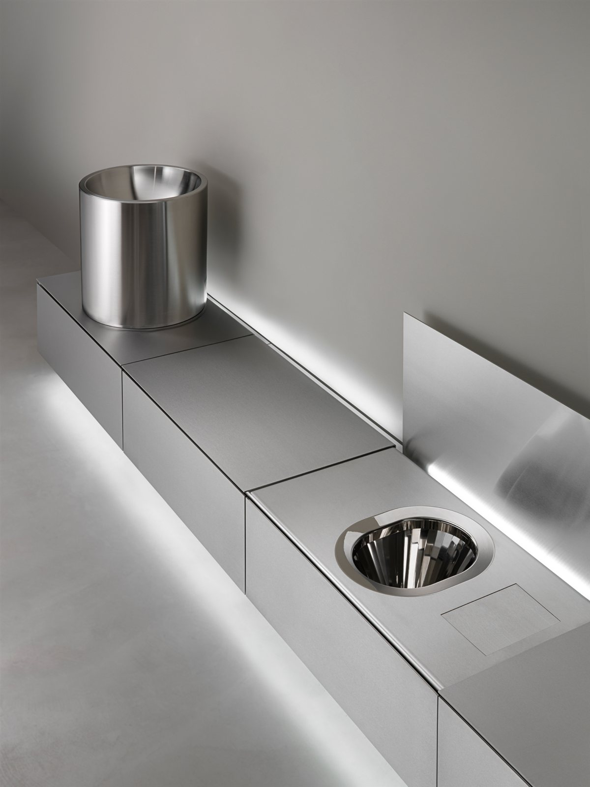
图：ABACO 集成模块系统，把卫浴功能与管线收进单一模块体块。图源：CEADESIGN 官网产品页（ABACO）。
07 Product 产品：从一枚龙头到一套集成系统
产品组合与命名逻辑
品牌按四个场景组织产品：卫浴（龙头、淋浴、冲水面板、电热毛巾架、配件、洗手盆、集成模块系统、内置部件）、厨房（单孔／双孔／三孔龙头、过滤水与沸水龙头、抽拉花洒、感应出水、分配器、下水与配件）、户外（户外淋浴、花园龙头）与通风（吊扇）。系列命名多为意大利语或意涵词（CUT 切割、REGOLO 尺、CARTESIO 笛卡尔、EQUILIBRIO 平衡、ARIACHIARA 清风、ENDLESS 无尽、ALLURE 魅惑、ATOLL 环礁），型号使用三字母加两位数字的编码体系（如 AYL01、SIX06、EQB01、HOK01、ABC01），便于在图纸与订单中精确指代。
产品线分工也很清楚：CUT、MILO360、NEUTRA、GRADI 等承担覆盖面与工程配套；AYLA、SIXTY、CARTESIO 等设计师系列承担形象与高端定制；ABACO、ETW、ARIACHIARA 承担技术旗舰角色。
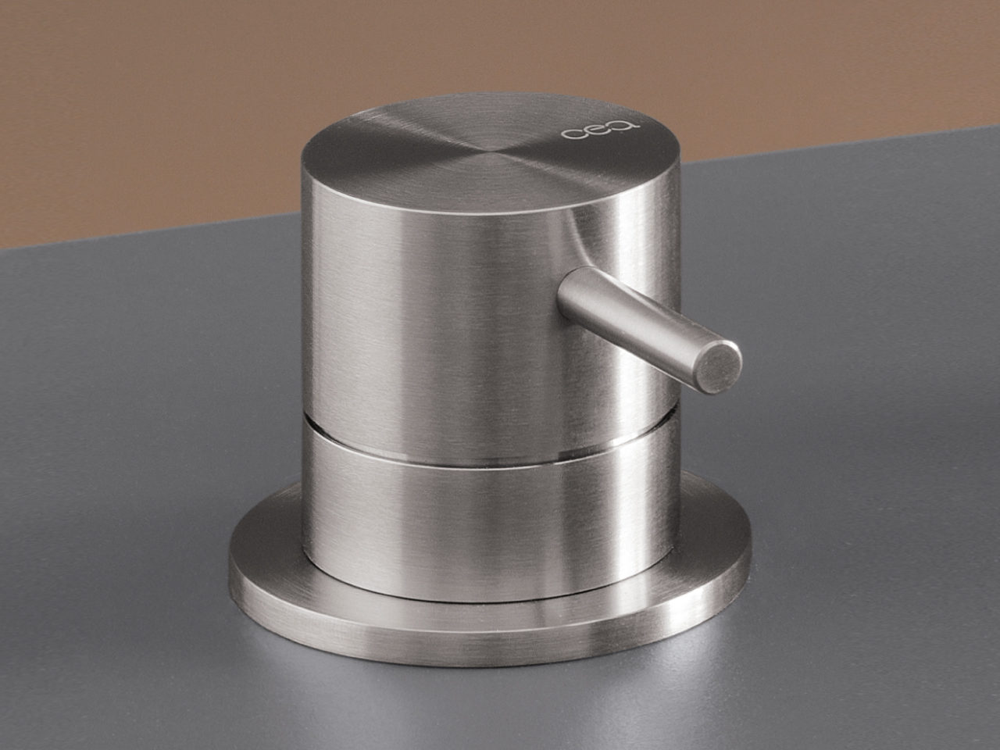
图：MILO360 系列龙头，以圆柱语汇覆盖多种安装组合。图源：CEADESIGN 官网产品页（MILO360）。
CUT（1998）：把龙头减到只剩功能
CUT 由 Mario Tessarollo 与 Tiberio Cerato 在 1998 年与品牌共同完成，2004 年获得金圆规奖评选入围与红点设计奖，并拥有三项专利。它的设计逻辑是把龙头拆解到只剩必要的几何体块：一个圆柱的出水口、一个控制体，连接方式保持最简。官方在 CUT PLUS 的介绍里写道，二十多年来 CUT 一直是龙头领域"优雅与简洁"的标志。
2023 年前后，公司推出 CUT PLUS，把重点从外观转到操作：温度设定好之后，只需一个动作即可调节流量。产品提供水平与垂直两种安装方向，出水手柄可左可右，材料仍为 AISI 316L，表面为缎面与抛光两种基础处理。
官方产品页：https://www.ceadesign.it/it/products/1-bathroom/5-taps/92-cut_plus
ABACO（2018）：把整间浴室的设备收进一个体块
ABACO 是一套模块化的集成卫浴系统，官方描述为"把卫生功能与管路技术隐藏在一个体量之内"，可以适应住宅中的不同房间。它的核心是一个由创始人设计并获工业发明专利的马桶模块：把排水、冲水与净身功能合并。系统由不锈钢模块与可选的天然材料饰面（大理石、木材）组合而成，并提供黑钻（Black Diamond）、浅金（Light Gold）、铜与青铜等特殊饰面，这些饰面工艺被官方描述为环境友好。
2018 年，ABACO 获得 Archiproducts Design Awards 卫浴类奖项，评审团由 40 家国际建筑事务所组成；2022 年该系列再次获得同一奖项的认可。它对品牌的战略意义在于：从卖单件龙头，升级为卖"一间浴室的技术底座"。
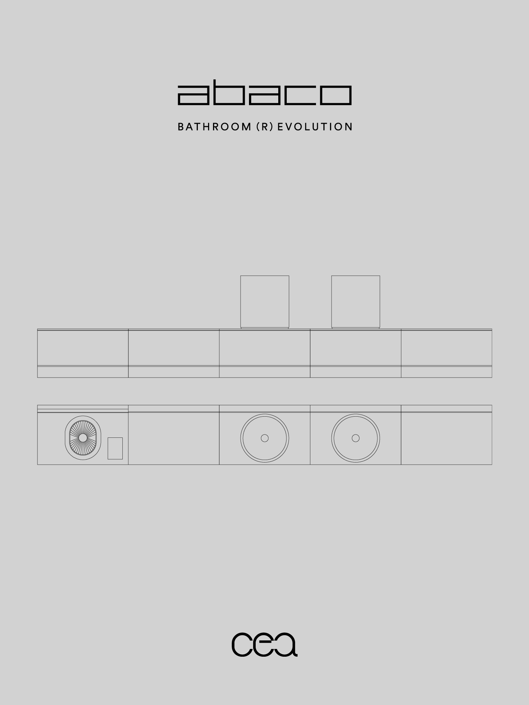
图：ABACO 系统的模块组合，可见不锈钢结构与可选的材料饰面。图源：CEADESIGN 官网产品页（ABACO）。
官方产品页：https://www.ceadesign.it/it/products/1-bathroom/8-integrated_modular_system/77-abaco
EQUILIBRIO（2019）：24 伏的低压毛巾架
EQUILIBRIO 是电热毛巾架与浴袍架，使用 AISI 304 不锈钢，由 24 伏低压电供电。它的结构逻辑是模块化：毛巾杆长度提供 450、580 与 1060 毫米三种规格，可水平或垂直安装，预埋件通用，因此可以在项目中重复排布。官方称其为"注册外观"，并强调功能、可持续与设计的结合。
这一产品的技术含量常被低估：低压意味着变压器与线路需要预先设计，而模块化意味着同一套预埋件可以适配多种排布。它也是品牌奖项链上的一环——2020 年获 Archiproducts Design Awards，2022 年获德国设计奖。
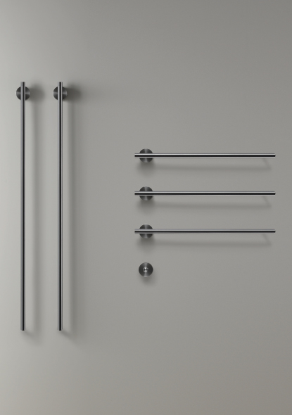
图：EQUILIBRIO 电热毛巾架的模块化杆件与安装方式。图源：CEADESIGN 官网产品页（EQUILIBRIO）。
官方产品页：https://www.ceadesign.it/it/products/1-bathroom/10-electric_towel_warmer/21-equilibrio
HOOK（2018）：把管道放在外面的柔性系统
HOOK 的设计出发点是一段被现代龙头隐藏起来的历史：在老式住宅里，水管沿着墙面外侧走，形成了外露管道的视觉语言。品牌把这一形制重新组织成一套"铰接且柔性"的龙头系统：由一段支撑件承载出水与配件，适配户外、浴室与厨房等不同场景，手柄形体柔和、便于握持。材料同样是不锈钢，提供拉丝与哑光黑两种处理。
这一系列由 Parisotto + Formenton 与 Natalino Malasorti 共同设计。2018 年官方宣布它获得 ICONIC AWARD 与 Wallpaper* Design Award；2021 年它以"创新龙头系统"的形态获得 Archiproducts Design Awards 2021，并拿到可持续特别提名——董事总经理 Roberta Bertacco 在获奖表述中提到，只用不锈钢这一可完全回收、加工过程环境影响低的材料，是获得该提名的主要原因。
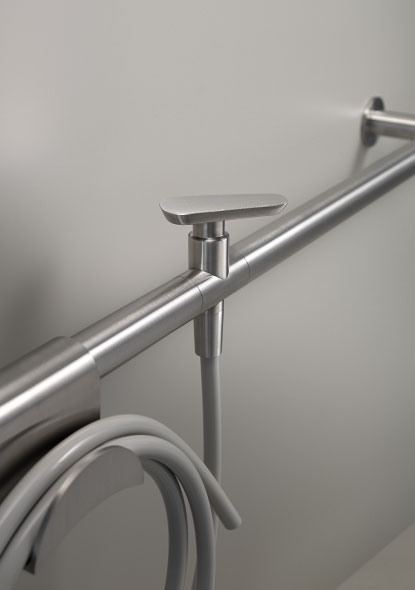
图：HOOK 系统的外露结构与铰接龙头形态。图源：CEADESIGN 官网产品页（HOOK）。
官方产品页：https://www.ceadesign.it/it/products/3-outdoor/12-garden_taps
ARIACHIARA（2019）：会净化空气的吊扇
ARIACHIARA 在 2019 年获 Archiproducts Design Awards，2022 年官方再次撰文介绍其完整功能。它的吊装部件由 AISI 316L 不锈钢制成并容纳电机，三片修长叶片由碳纤维与橡木或卡纳莱托胡桃木薄板交替叠合，提供原木色、哑光白与哑光黑；风扇直径 2100 毫米，五档速度，可正反转。
它的复合功能是这个品类的异类：通过电离与臭氧系统分解空气中的病毒、细菌、过敏原、一氧化碳、PM2.5 与 PM10 颗粒以及烟味等异味；同时以 3000 开尔文的 LED 提供自然光感的漫射照明，并配备音乐播放功能。官方把它定义为"空气分层与净化的调和"，目标场景是会客与社交空间。
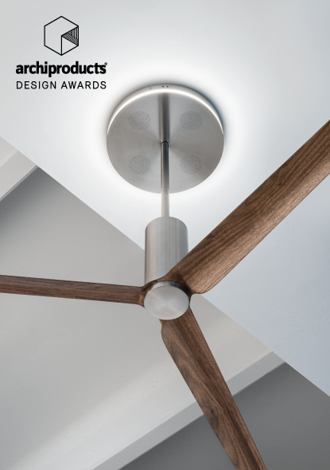
图：ARIACHIARA 获 2019 年 Archiproducts Design Awards 时的官方视觉。图源：CEADESIGN 官网新闻。
官方产品页：https://www.ceadesign.it/it/products/4-ventilation/15-ceiling_fans/39-ariachiara
SIXTY（2023）：与 Glenn Sestig 的合作
SIXTY 由比利时建筑师 Glenn Sestig 设计，采用 AISI 316L 不锈钢，提供缎面与抛光两种基础处理，另有名为 Black Ivory 的专属缎面饰面（官方称其色泽呼应咖啡中最讲究的品种之一，并与设计师用石灰华制作的镜面和整体洗手盆形成呼应）。设计手法是从一个原型几何出发做延伸，得到符合人机的比例。
该系列不只包含龙头，还包含浴室配件、镜面与洗手盆，因此更接近"一套浴室语言"而不是单个产品。2023 年它获得 Archiproducts Design Awards。
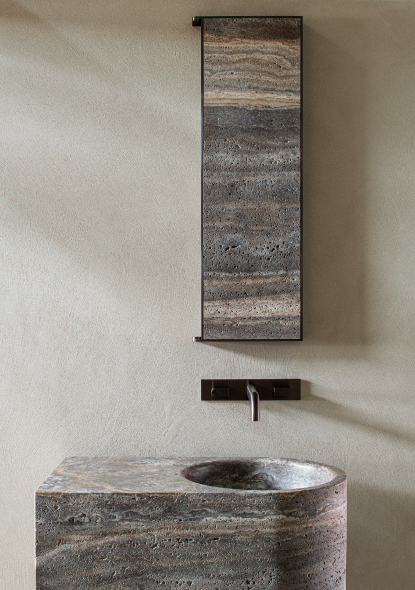
图：SIXTY 系列龙头与配套配件。图源：CEADESIGN 官网产品页（SIXTY）。
官方产品页：https://www.ceadesign.it/it/products/1-bathroom/5-taps/89-sixty
AYLA（2024）：Yabu Pushelberg 的 I 型梁
AYLA 由 Yabu Pushelberg 设计，官方把设计来源说得很具体：形体呼应建筑中的工字梁（I-beam）——一种基本的受力构件——同时把这种工业形态处理得轻盈。倒角边缘既形成视觉特征，也改善握持；超薄的水平出水嘴与更宽的竖向主体形成结构上的对比，官方称这依赖品牌在不锈钢上的加工能力。
AYLA 是品牌近年最重要的形象产品，2024 年上市即获得 Archiproducts Design Awards，配套的 Archiproducts 访谈由两位设计师出镜讲述设计过程。系列编码覆盖壁装渐进式混水器、双把手龙头、双孔与三孔龙头、单孔混水器以及淋浴恒温组合等安装类型。
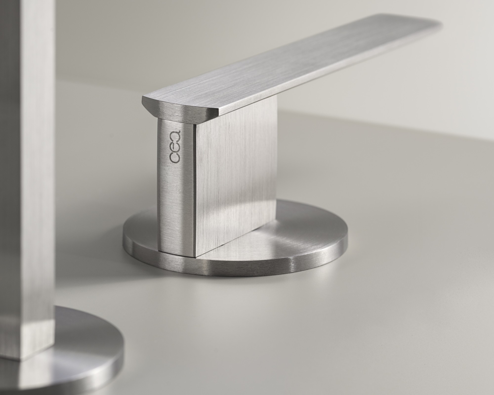
图：AYLA 系列龙头，形体取自工字梁，出水嘴做薄。图源：CEADESIGN 官网产品页（AYLA）。
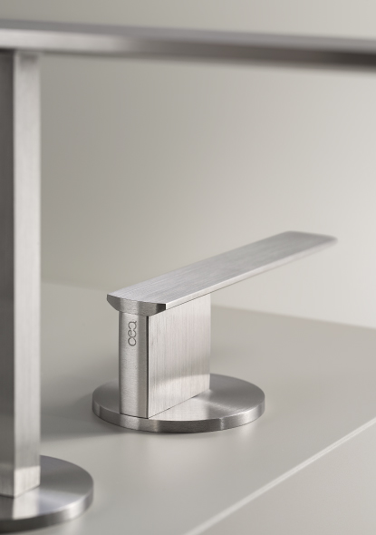
图：AYLA 系列的多种配置组合。图源：CEADESIGN 官网产品页（AYLA）。
官方产品页：https://www.ceadesign.it/it/products/1-bathroom/5-taps/93-ayla
ETW（2025）：出水即饮的厨房系统
ETW（Eco-Drinking Tap Water）是一套多功能厨房龙头系统，全部使用 AISI 316L 不锈钢，按人机原则设计。它的功能组合包括微滤后的静态水与冷藏气泡水，以及沸水，等于把饮水机、气泡水机与热水器合并到一套出水系统里。官方给出的可持续理由很直接：减少瓶装水的塑料使用与运输产生的碳排放。
系列覆盖单孔混水器、双孔与三孔龙头等多种配置，表面提供缎面、抛光与全部特殊饰面。2025 年 4 月发布，同年获得 Archiproducts Design Awards。
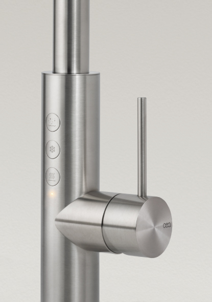
图：ETW 厨房出水系统，集成过滤、沸水与气泡水功能。图源：CEADESIGN 官网产品页（ETW）。
官方新闻页：https://www.ceadesign.it/en/news/4-news/685-eco-drinking_tap_water
ENDLESS（2026）：洗手盆的深度错觉
2026 年 9 月发布的 ENDLESS 是洗手盆系列，由 Natalino Malasorti 设计，名字包含两层意思：一是型号、尺寸与饰面之间近乎无限的组合可能；二是一种视觉体验——盆体的深度感在特定角度下"消失"，水面与盆沿的界限变得模糊。系列以抛光与缎面不锈钢为基础，利用表面的反射与吸收来放大这种光学效果。
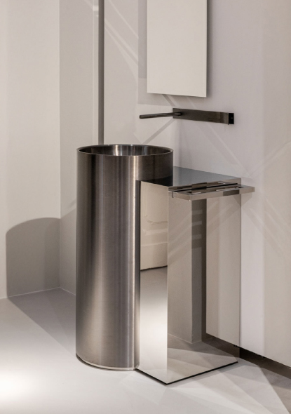
图：ENDLESS 洗手盆系列，利用表面处理制造深度错觉。图源：CEADESIGN 官网新闻（ENDLESS）。
官方新闻页：https://www.ceadesign.it/en/news/4-news/854-endless
ATOLL（2026）：厨岛与微滤主题
ATOLL 是一张整体抛光不锈钢厨岛，由 MAO Architects 设计。官方引用设计团队的话解释了它的来由：他们希望把厨房龙头放进一个与品牌设计语言一致的情境里，于是有了 ATOLL——"对水的纯粹性的隐喻"，并与新龙头系统引入的微滤主题呼应。形体取自环礁的曲线：陆地与水之间那条几乎察觉不到的边界，在室内空间里被转译为一条柔和的连续弧线。
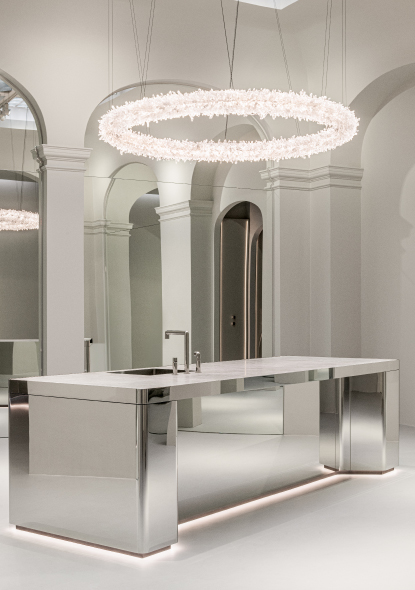
图：ATOLL 抛光不锈钢厨岛（MAO Architects 设计）。图源：CEADESIGN 官网新闻（ATOLL）。
官方新闻页：https://www.ceadesign.it/en/news/4-news/780-atoll
ALLURE（2026）：抛光表面的界面
ALLURE 的核心是抛光不锈钢把手：光与影在曲面上形成如同液态物质的波纹，官方把它描述为"嵌进浴室墙面的珠宝"。这一系列的设计论证集中在材料边界上——抛光处理让实体在反射中"消失"，形成视觉与触觉的双重诱惑。
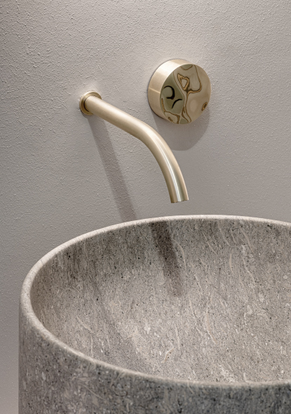
图：ALLURE 系列的抛光不锈钢把手。图源：CEADESIGN 官网新闻（ALLURE）。
官方新闻页：https://www.ceadesign.it/en/news/4-news/781-allure
第三方评价与产品小结
品牌的产品评价主要来自设计奖项与媒体。奖项覆盖面广（金圆规奖评选、红点、ICONIC AWARDS、Wallpaper*、德国设计奖、以及 2017 年以来几乎每年一次的 Archiproducts Design Awards），媒体端则以设计杂志与各国卫浴垂直媒体为主。这些评价的共同指向是两点：材料的一致性与机构的完成度。
从产品结构看，品牌的分工可以总结为"一条材料主线 + 三种产品角色"：材料主线是不锈钢与精密加工；三种角色分别是覆盖面产品（Cut、Milo360、Neutra 等）、形象产品（Ayla、Sixty、Cartesio）与技术旗舰（Abaco、ETW、Ariachiara）。
08 Aesthetics 美学：不锈钢的三种表面与一种克制
视觉识别与传播语言
品牌的视觉系统以字标与"CEADESIGN"大写字母组合为主，产品摄影以浅色或中性背景、均匀照明突出金属的表面质感；官方的传播中枢是自有杂志 CEAlab（2026 年已出至第 17 期）与新闻栏目，后者把内容分为奖项、认证、企业、展会、产品与展厅六类。媒体关系是这套系统的一部分：官网的媒体评述栏目按年月与媒体名归档，2026 年的条目覆盖 Wallpaper*、Domus、AD、Elle Decor、Interior+Design、Vogue Living Australia、SALA BAÑO、DDN 等。
形态与比例：圆与直角
品牌的产品形态基本落在两个极端之间：一种是圆柱语汇（MILO360 被官方称为带有六十年代设计的标志性产品，圆柱形体"适应任何建筑类型"），另一种是正交感（CARTESIO 用正交的水流坐标定义产品，出水嘴以直角弯折）。多数系列在两者之间取值：AYLA 用工字梁的比例，SIXTY 从原型几何延伸，HOOK 用柔和的握持曲线。
色彩与材料情绪
不锈钢是这个品牌的色彩体系。基础处理有两种：缎面（拉丝，亚光）与抛光（镜面）。在此之上是四种特殊饰面：黑钻（Black Diamond）、青铜、铜与浅金，官方强调这些饰面通过环境友好工艺获得，并称其"生态且生物相容"。材质层面还会出现木材与石材：ABACO 可以搭配大理石与木饰面，SIXTY 的镜面与整体盆使用石灰华，ARIACHIARA 的叶片用橡木或胡桃木与碳纤维叠层。
这种色彩策略的结果是：产品在空间中几乎不争夺注意力，只在光线变化时显出差异。抛光表面把周围环境拉进产品，缎面表面则把光打散成柔和的过渡。
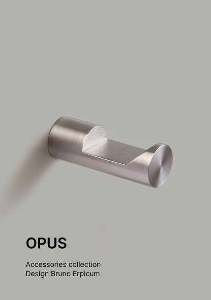
图：品牌的浴室配件系列，用于说明不锈钢的饰面与表面处理体系。图源：CEADESIGN 官网产品页（OPUS）。
光与空间
光在品牌产品里承担两种角色。第一种是反射：抛光不锈钢把空间"折叠"进产品表面，ALLURE 与 ENDLESS 都把这一层作为设计主题。第二种是发光：ARIACHIARA 以 3000 开尔文 LED 提供照明，EQUILIBRIO 这类电热产品在浴室里也改变了空间的干燥与温度感受。
展厅是这套美学的物理版本。米兰展厅位于布雷拉区的历史建筑内，根特展厅面向北欧市场，科尔蒂纳展厅在 2024 年以"重新定义空间、强调待客与社区"为定位开放，纽约展厅位于西 29 街。这些空间共同的特点是：产品被放进真实的水路与墙面条件里展示，而不是放在货架上。
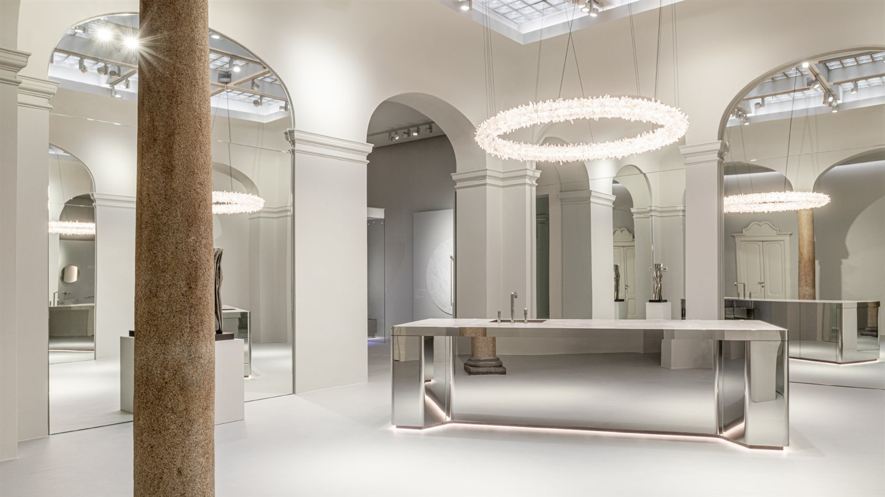
图：CEA MILANO 展厅内部，产品与材料在真实空间条件下陈列。图源：CEADESIGN 官网公司页。
感官与情感基调
品牌的感官设计集中在三处：握持、水形与声音。握持体现在把手的人机处理（AYLA 的倒角、HOOK 的柔和曲线、SIXTY 的原型延伸）；水形体现在出水嘴的比例与出水模式；声音则出现在 ARIACHIARA 的音乐与空气流动声中。官方对 ALLURE 的描述把这种感受推到了极致——"不只是视觉上的海市蜃楼，也是触觉上的"。
术语注释：su misura——意大利语，意为按尺寸定制，在高端五金中指产品按项目条件单独配置。
美学评价
CEADESIGN 的美学可以概括为"材料的诚实加上机构的克制"。支持这一判断的依据是具体的：全线单一材料让视觉噪音降到最低；表面处理被简化为两种基础加四种特殊；形体不追求造型事件，而把复杂度放进加工与机构（直角弯管、微切口、恒温模块、低压供电、集成出水）。代价同样存在：不锈钢的抛光表面容易显露水渍与指纹，深色特殊饰面对日常维护的要求更高；单色材料的美学也意味着产品在空间中不会成为视觉焦点，品牌必须依靠比例与细节说服客户。
09 Design 设计：一种材料、一套机构与一座地下厂房
设计哲学：材料先行，功能集成
CEADESIGN 眼中的设计首先是解决问题的工具，其次才是形式的表达。这一点可以从它对自己业务的定义读出：品牌把卫浴、厨房、户外与通风放在同一条产品线上，统称"水与空气"的场景，并用一句话概括材料立场——"NATURALMENTE ACCIAIO"（自然地，不锈钢）。
在功能、形式、情感与时间之间，它的站位由三条取舍构成。第一，材料不参与妥协：全线以 AISI 316L 不锈钢为主材，官方给出的理由是耐久、抗菌、抗外部介质与 100% 可回收。第二，技术向内部收拢：能集成的功能就集成，ABACO 把卫浴设备与管线收进一个模块，ETW 把过滤、沸水与气泡水合进一套出水系统，ARIACHIARA 把风扇、空气净化、照明与音乐放进同一台设备。第三，产品要能被长期维护：阀芯、密封件与预埋件都有标准化部件，低压电气与恒温模块可以更换，官方为此维护着专门的认证与配件体系。
组织：创始人兼艺术总监，加上外部设计师
品牌的设计组织有两个层次。内部以 Natalino Malasorti 为核心——创始人、艺术总监、设计师与技术负责人，ABACO、EQUILIBRIO、ARIACHIARA、ENDLESS 等产品都出自他；另有内部团队以 CEADESIGN Studio 名义署名（如 MILO360、ETW）。外部则是一份跨国的合作名单：1998 年 CUT 的 Mario Tessarollo 与 Tiberio Cerato、HOOK 的 Parisotto + Formenton、CARTESIO 的 CMP Design、SIXTY 的 Glenn Sestig、AYLA 的 Yabu Pushelberg、ATOLL 的 MAO Architects，以及早期产品线中的 Bruno Erpicum。
这种结构的效果是：技术与机构由内部掌握（避免外包导致的结构妥协），形象与话题由外部设计师带来。风险则在于创始人同时承担艺术总监与产品设计师双重角色，品牌语言高度依赖个人判断。
CMF：表面处理与工艺
品牌的色彩体系建立在不锈钢的三种表面之上：缎面（拉丝）、抛光（镜面），以及在此基础上做的特殊饰面——黑钻（Black Diamond）、青铜、铜与浅金。官方对特殊饰面的表述是"通过环境友好工艺获得""生态且生物相容"，这与它把材料可持续性作为卖点的整体叙事一致。材质层面还会与木材、石材交叉：ABACO 可配大理石与木饰面，SIXTY 的镜面与洗手盆使用石灰华，ARIACHIARA 的叶片用橡木或胡桃木与碳纤维叠合。
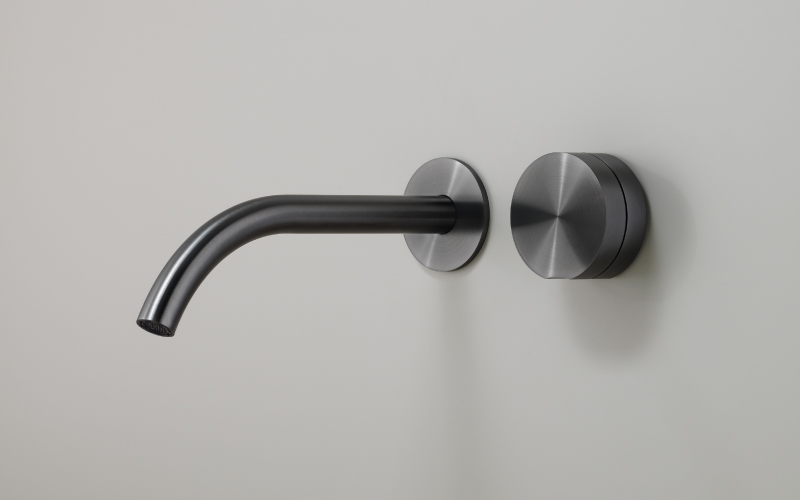
图：官方发布的产品细节图，用于呈现表面处理与部件精度。图源：CEADESIGN 官网公司页。
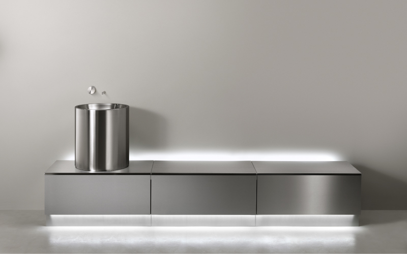
图：官方产品细节图（另一视角）。图源：CEADESIGN 官网公司页。
制造：Pove del Grappa 的垂直工厂
公司的总部与生产基地设在 Pove del Grappa（威尼托大区维琴察省），处在以金属加工与机械制造闻名的巴萨诺-德尔格拉帕产业区。官方对生产体系的描述包含几个可核查的要点：
- 生产过程从概念到成品全程可追溯，按精益生产（LEAN PRODUCTION）原则管理，包含减少废料、工位人机工学、垂直仓库与自动拣选；
- 总部建筑向垂直方向发展，并把部分生产部门放在地下，用土壤的天然隔热来调节室内温度，减少对植被用地的占用；
- 该生产部门使用的能源全部来自可再生能源；测试单元使用闭环水系统以节约水资源；生产区引入植被与自然顶光以改善工作条件；
- 生产工艺涵盖车削、铣削、激光、焊接与折弯等精密机械加工，技术部门使用 SolidWorks 等工具完成从概念到三维与出图的全过程，并按微机械公差与配合进行设计；装配环节由工人使用台式工具手工完成。
体系认证方面，公司公开列出 ISO 9001（质量）与 ISO 14001（环境）两项。
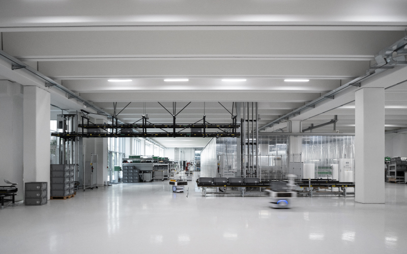
图：官方发布的生产区图片，对应精益生产与自动化仓储的说明。图源：CEADESIGN 官网公司页。
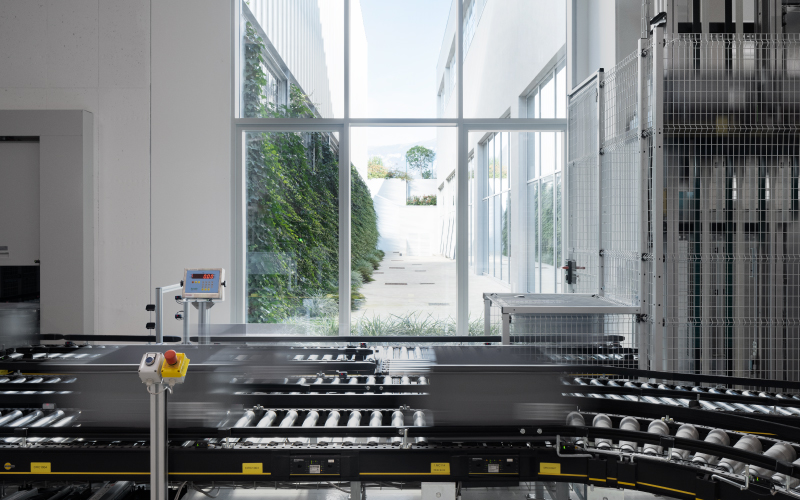
图：官方生产图片，展示加工与装配环节的环境。图源：CEADESIGN 官网公司页。
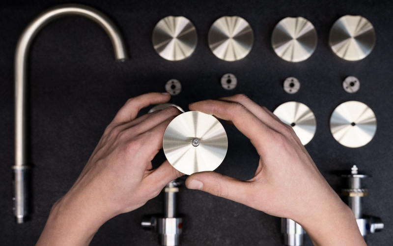
图：官方生产图片，用于说明质量与检测流程。图源：CEADESIGN 官网公司页。
可持续：从材料到工厂
品牌的可持续论证有四个层次。材料层：AISI 316L 完全可回收、耐腐蚀、无卫生隐患；工艺层：特殊饰面使用环境友好工艺，官方称其生物相容；工厂层：可再生能源供电、地下生产层利用地温、测试用水闭环、减少包装与废料；产品层：ETW 用过滤与气泡水替代瓶装水，减少塑料与运输碳排放。2021 年，公司在企业新闻中把这一整套做法称为"智能岛屿"式的产业创新项目。
人机与工程：藏起来的技术
从工程角度看，品牌的技术积累集中在五处。第一是流体控制：CUT PLUS 用新的混水概念，把"设定温度后调节流量"简化为一个动作；恒温系列面向北美市场提供 Acqua Stop System 防烫断流。第二是低压电气：EQUILIBRIO 使用 24 伏供电，安全但要求前期布线设计。第三是感应与自动化：厨房系列提供红外感应出水与感应控制。第四是集成水路：ETW 把微滤、加热与气泡化集成为一个系统。第五是空气与光：ARIACHIARA 的 2100 毫米直径机身包含电机、电离净化模块、3000 开尔文 LED 与音响。
这些技术有两个共同点：都藏在形体内部，都需要在项目设计与施工阶段就介入。这也是品牌把展厅与项目咨询（如 ABACO 的专属项目邮箱）视为核心渠道的原因。
品牌侧依据与设计变量
| 品牌侧依据 | 对应的设计变量 | 产品证据 |
|---|---|---|
| 不锈钢是唯一主材 | 全线 AISI 316L／304，表面处理标准化 | Cut、Ayla、Sixty、Abaco |
| 设备应服务于空间而非占领空间 | 功能集成、形体收敛、隐藏安装 | Abaco、ETW、Equilibrio |
| 产品要长期可用 | 可更换阀芯与预埋件、模块化排布 | Equilibrio 三种杆长与通用预埋件 |
| 加工能力是差异化来源 | 直角弯管的微切口减料、超薄出水嘴 | Cartesio、Ayla |
| 可持续必须可核查 | 可回收材料、闭环用水、可再生电力 | ISO 14001、公司可持续说明 |
| 高端市场需要设计师语言 | 与外部设计师合作并保留技术主导权 | Sixty（Sestig）、Ayla（Yabu Pushelberg） |
10 Experience 体验：从图纸到二十年之后
了解与选购
潜在客户接触品牌的主要路径是官网、展厅与经销商，以及设计媒体与展会。官网的信息结构对专业用户友好：产品按场景与安装方式分类，认证页面（Approvals）按市场列出可获得的产品合规项，另设媒体资料包、图册与新闻栏目。价格不在公开渠道，产品按项目报价。
到店：四家展厅
品牌目前公开的展厅分布在四个城市：米兰布雷拉 Via Brera 9（2016 年开幕，位于设计城市核心）、比利时根特（2019 年，服务北欧市场）、科尔蒂纳（2024 年，位于安佩佐多洛米蒂，定位是把展示空间与待客、社区结合）、以及纽约西 29 街（招聘信息中列出的美国办公室与展示点）。展厅的职能不只是陈列：公司把它们作为设计咨询与项目开发的场所，招聘岗位中也包含面向建筑师与室内设计师的顾问角色。
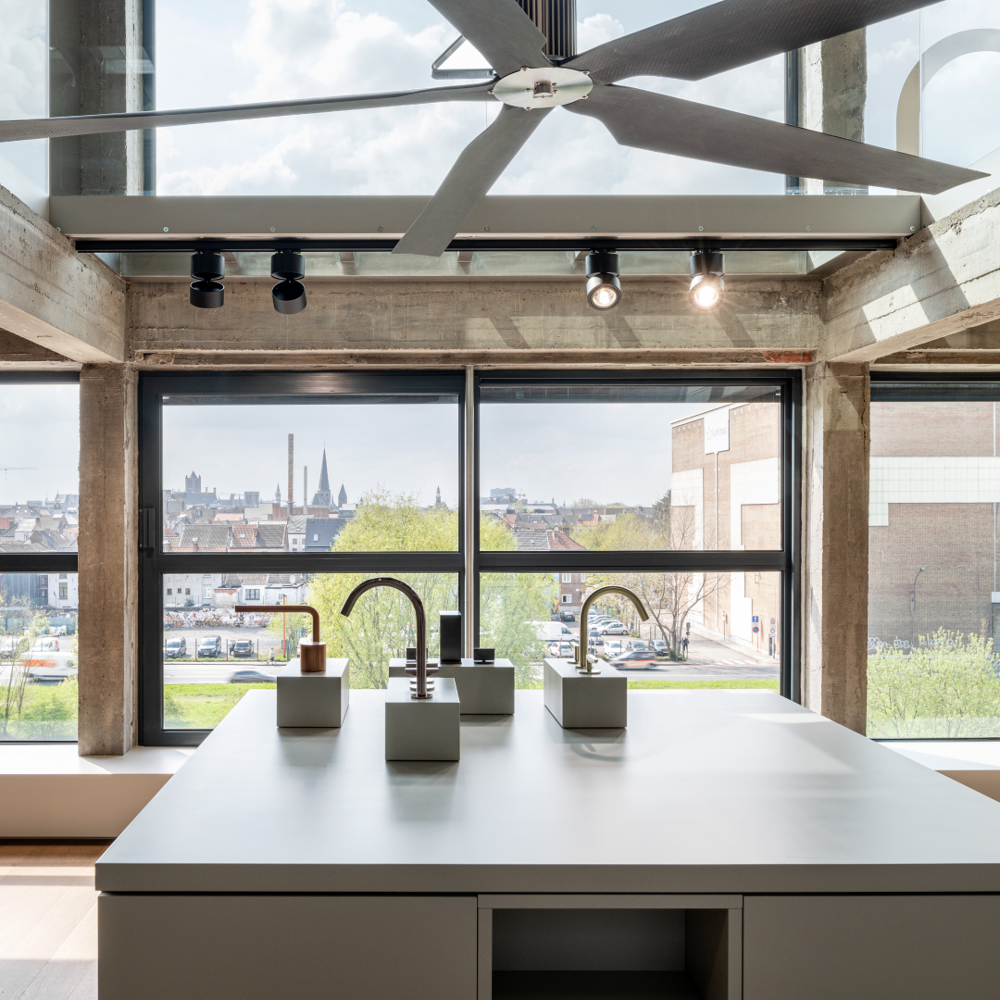
图：位于比利时根特的品牌展厅，为北欧市场提供展示与设计咨询。图源：CEADESIGN 官网公司页。
定制与交付
产品的定制主要集中在配置层面：同一系列提供多种安装方式（明装、暗装、壁出、地出）、多种出水形式（出水嘴、顶喷、手持花洒）、多种饰面与长度；系统类产品（ABACO、ETW）则按项目条件组合。官方对 ABACO 明确说明可按客户偏好定制大理石与石材饰面，并设置专门的项目咨询邮箱。交付链条通常是：设计与经销商确认配置 → 工厂按单生产 → 物流发运 → 本地合作方与项目方完成安装。
安装与维护
安装条件是这类产品体验的关键。暗装系列需要预埋件（Built-in parts）在土建阶段就位；恒温与防烫模块需要确认进水温度与压力条件；EQUILIBRIO 需要为 24 伏低压电路预留位置；ARIACHIARA 需要在结构层确认吊装条件与电源；ABACO 的模块需要与排水、通风与墙体做法配合。日常维护相对简单——不锈钢表面用常规清洁剂即可，困难在于避免抛光面留下水渍与指纹，因此品牌对特殊饰面（如 Black Diamond）的维护建议尤其重要。
长期持有
从产品结构可以判断品牌的长期策略：主材是不锈钢（耐腐蚀、可回收），机构件标准化（阀芯、密封件、预埋件），系统产品模块化（EQUILIBRIO 的通用预埋件、ABACO 的模块组合）。这为二十年以上的使用期提供了基础，但前提是配件与服务网络能持续供给。品牌目前未公开质保年限与配件供应承诺的具体条款，这一点在进行项目比选时应向经销商确认。
体验断裂点
以下问题来自公开信息与产品结构，属于可验证的体验弱点。价格与交期不透明是第一条：官网不公开价格与标准交期，方案阶段的成本判断依赖经销商。第二条是早期介入要求：暗装、恒温、低压与集成系统都需要在土建阶段确定，改期或变更的成本高。第三条是渠道与安装依赖：产品的最终体验取决于当地合作方的施工质量，尤其是暗装对墙体与管道精度的要求。第四条是表面维护：抛光与深色饰面对水渍、水垢与指纹更敏感，需要明确的清洁规范。第五条是电子与系统部件的长期服务：感应器、变压器、净化模块与音响等部件属于电子件，其寿命与更换条件与机械件不同，官方尚未公开相关承诺。
11 Competition 竞品：同一张牌桌上的高端龙头
品牌归属与行业坐标
CEADESIGN 是一家独立的家族企业，没有可披露的集团母公司，注册信息显示注册资本为 7.6 万欧元，税号 01628190249，注册地为维琴察。它的行业坐标可以用三句话概括：在意大利，它属于金属加工产业区里走设计路线的专业厂；在国际高端龙头市场，它与北欧与德国的设计龙头品牌直接竞争；在集成系统与通风这些延伸品类上，它的对手则来自不同的行业。
品牌层：三类对手
第一类是斯堪的纳维亚极简龙头品牌。丹麦 VOLA 是这条线路上最直接的对照：品牌自述"自 1968 年起一直让生活更好"，以极简的圆柱语汇与埋墙系统闻名，产品线覆盖龙头与配件，客户同样是建筑师与高端项目。两者的差别在于材料路径：VOLA 的经典语言建立在铸造金属与几何原型上，而 CEADESIGN 把全部产品线建立在不锈钢与精密机械加工上。
第二类是德国与意大利的奢华卫浴品牌。德国 Dornbracht 以"奢华淋浴、龙头与水槽"为定位，强调设计系列的完整性；意大利的 Gessi、Fantini 与 Zucchetti 在高端住宅与酒店市场同样活跃，且在中国等市场拥有更广的渠道覆盖。这一层的竞争点是品牌声量、系列完整度与项目服务能力。
第三类是卫浴系统与整体方案品牌。在集成模块（ABACO）所在的赛道里，竞争者是提供整间浴室系统或整体家具的品牌；在通风产品（ARIACHIARA）所在的赛道里，竞争者是高端吊扇与空气处理设备厂商。
产品层：四类直接对位
第一类是常规龙头：CUT、MILO360、NEUTRA、GRADI 等对位各家的工程配套系列，竞争点在价格与交期。
第二类是设计师系列：AYLA 与 SIXTY 对位 Dornbracht、Fantini、Gessi 的设计师系列，竞争点在设计的辨识度与外部设计师的号召力。
第三类是集成系统：ABACO 对位整体浴室系统；ETW 对位厨房饮水系统（含过滤、沸水与气泡水的一体解决方案），后者近年随着健康饮水需求增长而成为热点。
第四类是户外与通风：户外淋浴（CARTESIO、INNOVO、GRADI、BOLD、CAMILLA、NEUTRA）与花园龙头（HOOK）对位泳池与景观配套品牌；ARIACHIARA 则几乎没有直接对应的高端意大利家具行业对手。
中国市场的对照
在中国市场，品牌已取得中国水效标识（China Water Efficiency Label）认证，并在商标注册清单中列入中国，官网提供英文与意大利文版本、并以微信等渠道触达本地市场。它的机会在于高端住宅与酒店对不锈钢与卫生属性的认可；挑战在于本地高端卫浴品牌的交付速度与价格优势，以及进口产品在交期与售后上的天然劣势。
竞争小结
把竞争放在一起看，CEADESIGN 的护城河由三部分构成：材料与工艺的纵深（全线 316L、精密机构、特殊饰面）、集成能力（把多个功能收进一个产品）、以及认证与合规覆盖（面向十余个市场逐项取得认证）。其中前两项需要长期积累，第三项则需要持续的行政与技术投入。相对短板也明确：规模小于大型卫浴集团，渠道覆盖与交期弹性有限，品牌在普通消费者中的认知度远低于其专业圈层的认知度。
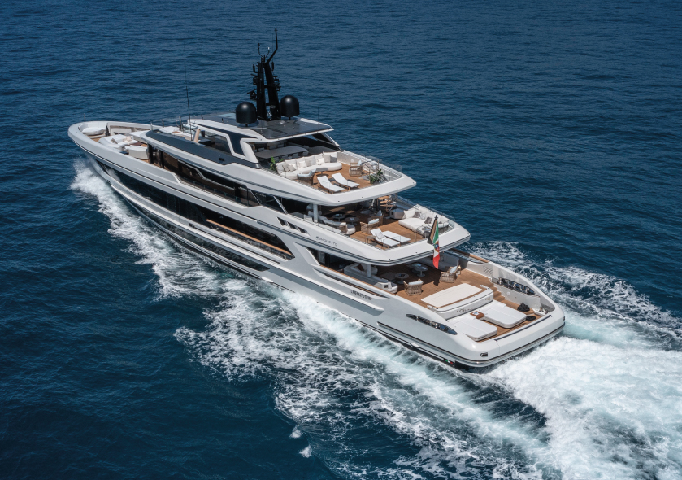
图：Baglietto T52（52 米混合动力游艇，Francesco Paszkowski Design 设计），使用品牌不锈钢产品。图源：CEADESIGN 官网案例页。
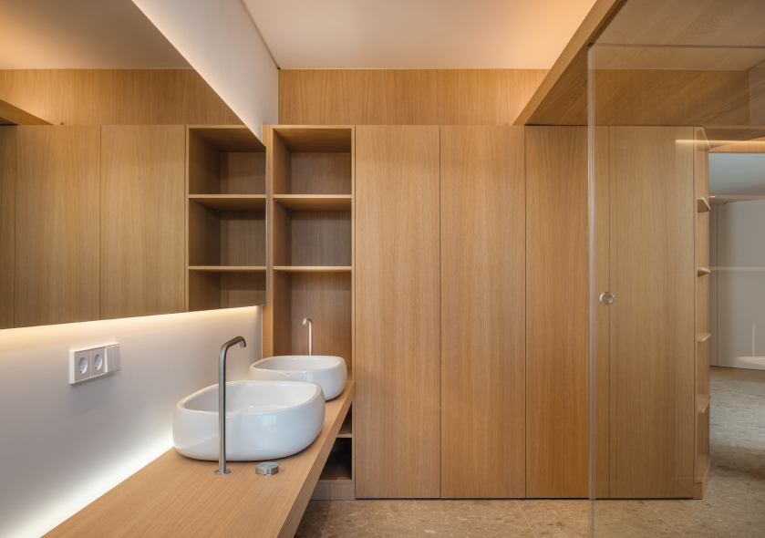
图：西班牙阿利坎特 Morning Breeze Villa 项目内景，入口玻璃幕墙高逾 7 米。图源：CEADESIGN 官网案例页。
12 Strategy 战略：保护、改变、扩张与风险
保护：已经成立的高价值资产
材料与工艺的纵深（置信度：高）。 全线以 AISI 316L 不锈钢为主材，配合车削、铣削、激光、焊接、折弯与抛光工艺，形成了"能把结构做得比别人薄、比别人准"的能力。CARTESIO 的直角弯管微切口与 AYLA 的超薄出水嘴是两个可核查的证据。
集成能力（置信度：高）。 ABACO 把卫浴设备与管路收进一个模块，其马桶模块为创始人本人的工业发明专利；ETW 把过滤、沸水与气泡水合并到一套出水系统。这类产品的壁垒不在单项技术，而在系统集成与跨专业协调。
设计合作网络（置信度：中高）。 外部设计师名单覆盖比利时（Glenn Sestig）、加拿大（Yabu Pushelberg）、意大利（Parisotto + Formenton、CMP Design、MAO Architects、Tessarollo 与 Cerato），既有形象型合作，也有技术型合作，形成稳定的产品更新节奏。
认证与知识产权资产（置信度：高）。 ISO 9001 与 ISO 14001 体系认证；产品认证覆盖 WRAS、DVGW、SVGW、Belgaqua、UL、CSA、WaterSense、Watermark、WELS、中国水效标识、EAC、CB、SVES 等；商标注册覆盖 17 个法域；CUT 拥有三项专利，ABACO 拥有工业发明专利。
奖项链与媒体关系（置信度：高）。 从 2004 年金圆规奖评选与红点设计奖，到 2017 年 ICONIC AWARDS 的 Best of Best，再到 2017—2025 年间几乎每年一次的 Archiproducts Design Awards，以及德国设计奖与 Wallpaper* 奖项。官网的媒体评述栏目在 2026 年收录了 Wallpaper*、Domus、AD、Elle Decor、Interior+Design、Vogue Living Australia 等数十家媒体的报道条目。
展厅与项目服务能力（置信度：中高）。 米兰、根特、科尔蒂纳与纽约四地展厅，配合面向建筑师的项目咨询（如 ABACO 的专属项目邮箱）与招聘中明确的顾问岗位，构成"技术型销售"的组织基础。
改变：需要修正的环节
经营信息的透明度（置信度：中）。 与同产区的其他高端品牌相比，CEADESIGN 未公开营业额、员工规模与产能等数据，公开资料仅能查到注册资本与注册信息。对寻求长期合作的经销商、工程方与投资方而言，这会影响尽调效率；对品牌自身而言，也减少了被引用为行业样本的机会。
价格与交期的可预期性（置信度：中）。 产品按项目报价，官网不提供价格区间与标准交期，方案阶段的成本判断依赖经销商，容易在比选阶段被排除。
电子与系统部件的长期承诺（置信度：中）。 感应器、变压器、电离净化模块与音响等部件的寿命与更换条件与机械件不同，官方尚未公开相关承诺；对酒店与工程客户，这是采购评估中的常见问题。
中文市场的内容供给（置信度：中）。 官网仅提供意大利文与英文版本，中文资料依赖第三方；品牌在中国已取得水效认证并有商标注册，但缺少本地化的技术内容与案例，这会削弱其在中文项目中的说服力。
对外称谓的一致性（置信度：低至中，方向性）。 品牌在外文与中文语境中常以"CEA"缩写被引用，与同名机构混淆的可能性较高；在建立长期品牌资产的角度，固定使用"CEADESIGN"全称有利于检索与识别。
扩张：增长方向与机会
厨房水系统（置信度：中高）。 ETW 把过滤、沸水与气泡水合并，切入了健康饮水与减少瓶装水的需求，且与品牌的微滤主题（ATOLL 的官方表述中提到）形成产品家族。这条线在北美的合规基础（UL、CSA、WaterSense）已经具备。
北美市场（置信度：中高）。 品牌在纽约设有办公与展示点，招聘信息中列有面向纽约的顾问岗位；产品认证覆盖 UL、CSA 与 WaterSense，恒温系列专门提供面向美国与加拿大市场的防烫断流配置。认证与本地团队同时具备，说明这是明确的重点市场。
通风与空气品类（置信度：中）。 ARIACHIARA 把吊扇做成空气净化、照明与音乐的综合设备，在高端住宅与酒店空间里几乎没有同类竞争产品；这条线可以继续向"室内环境设备"延伸。
户外与泳池场景（置信度：中）。 户外淋浴与花园龙头系列（CARTESIO、INNOVO、GRADI、BOLD、CAMILLA、NEUTRA、HOOK）对应别墅与度假物业的增长场景，且不锈钢在户外与海水环境下具备材料优势。
从五金到空间物件（置信度：中）。 2026 年的新品从龙头扩展到洗手盆（ENDLESS）、厨岛（ATOLL）；SIXTY 系列已包含镜面与一体盆。这条路径的终点是提供完整的浴室与厨房界面，与整体卫浴品牌正面竞争。
项目与游艇渠道（置信度：中）。 公开案例覆盖博物馆（Museo di Castelvecchio）、酒店（Senato Hotel）、豪宅（Morning Breeze Villa、Ave Duchastel）、多户住宅（152 Elisabeth Street）与游艇（Baglietto T52、Mylius 系列）。这类项目单笔规模大、示范效应强，是品牌维持高端定位的关键渠道。
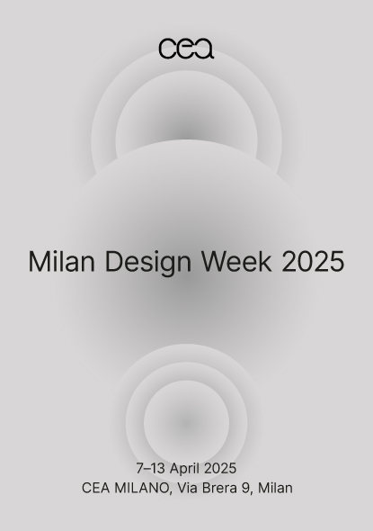
图：品牌参加米兰设计周 2025 的官方视觉。图源：CEADESIGN 官网新闻。
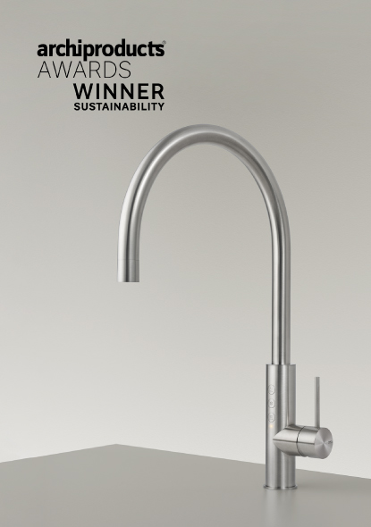
图：品牌在 Archiproducts Design Awards 2025 的获奖视觉（ETW）。图源：CEADESIGN 官网新闻。
风险：可验证的威胁与约束
原材料与能源价格（置信度：中）。 产品以不锈钢为主材，材料成本占比高，且加工环节对能源敏感。价格波动会直接压缩利润或推高报价。
单点生产与产能弹性（置信度：中）。 全部生产集中在 Pove del Grappa 一处厂区。集中有利于品质与协同，但缺乏地理缓冲，意外停产或订单骤增时弹性有限。
出口与跨境交付（置信度：中）。 品牌的认证与展厅结构显示其业务以出口为主，但未公开出口占比。跨境交付周期、关税与汇率变化会直接影响价格竞争力。
规模劣势（置信度：中）。 与 Gessi、Fantini、Zucchetti 等意大利同业以及 Dornbracht 等德国品牌相比，公司在渠道覆盖与产能规模上处于较小位置，在大型工程招标中可能因交期与产能被排除。
设计主导权集中（置信度：低至中，方向性）。 创始人身兼艺术总监与产品设计师，产品语言高度依赖个人判断；长期看需要对设计方法进行制度化沉淀。
电子与软件部件的支持风险（置信度：中）。 净化模块、音响与感应装置涉及电子与固件，其生命周期短于机械件，若缺少明确的备件与升级路径，会影响长期口碑。
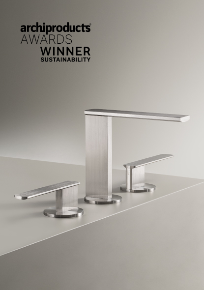
图：品牌在 Archiproducts Design Awards 的获奖视觉（2024 年，AYLA）。图源：CEADESIGN 官网新闻。
13 视频与访谈资料
品牌的内容资产集中在官网新闻、自有杂志与合作平台，本次研究整理如下：
- 官方 YouTube 频道（YouTube 频道 ID：UCWlIXPPxWHEIW6w5B9hEf8Q）：产品影片与展会记录的主要发布渠道；本次研究未能直接读取频道列表，建议通过官网新闻页内嵌视频观看，或向品牌索取媒体资料包。
- 《Yabu and Pushelberg talk about AYLA》（Archiproducts 访谈）：两位设计师讲述 AYLA 的设计来源与工字梁形态的取舍，链接见 AYLA 产品页内的访谈入口。
- CEAlab 杂志（第 12—17 期，2022—2026 年）：品牌自办刊物，内容含产品、项目与技术说明，可在官网图册栏目下载。
- 展会与活动记录：米兰设计周 2024 与 2025、ARTDOM 2025 与 2026、巴黎设计周 Obumex 活动（2025）、CEAMOMENTO 03（SIXTY by Glenn Sestig）与 04（Bruno Erpicum 四十年建筑回顾）。
- 文化类活动影片：2017 年的《STEELSOUND》（钢的声音）与《OLIO, VINO & ACCIAIO》《STEEL INSPIRATION》《SAPERE ACCIAIO》等以钢为主题的对谈活动；2024 年的《CEADESIGN in the Name of Art》（Plus Magazine 快闪书店与展览）。
- 企业项目影片：《Smart islands》（2021 年，可持续产业创新项目）与其后的可持续内容。
- 需要说明的是，上述条目依据官网新闻与栏目页面整理，部分影片为页面内嵌形式，未提供独立链接。
14 来源与延伸阅读
官方资料
- 品牌官网首页（英文）：https://www.ceadesign.it/en
- 公司介绍（历史、创始人、生产基地、展厅、可持续与工业化）：https://www.ceadesign.it/en/about
- 产品分类：卫浴 https://www.ceadesign.it/en/products/1-bathroom ；厨房 https://www.ceadesign.it/en/products/2-kitchen ；户外 https://www.ceadesign.it/en/products/3-outdoor ；通风 https://www.ceadesign.it/en/products/4-ventilation
- 代表产品页：CUT PLUS https://www.ceadesign.it/en/products/1-bathroom/5-taps/92-cut_plus ；ABACO https://www.ceadesign.it/en/products/1-bathroom/8-integrated_modular_system/77-abaco ；EQUILIBRIO https://www.ceadesign.it/en/products/1-bathroom/10-electric_towel_warmer/21-equilibrio ；ARIACHIARA https://www.ceadesign.it/en/products/4-ventilation/15-ceiling_fans/39-ariachiara ；SIXTY https://www.ceadesign.it/en/products/1-bathroom/5-taps/89-sixty ；AYLA https://www.ceadesign.it/en/products/1-bathroom/5-taps/93-ayla
- 认证与商标：https://www.ceadesign.it/en/approvals
- 新闻（含奖项、认证、展会与产品发布）：https://www.ceadesign.it/en/news/4-news
- 媒体评述（2020—2026 年多家媒体报道归档）：https://www.ceadesign.it/en/news/3-press_review
- 案例（住宅、酒店、博物馆、游艇等）：https://www.ceadesign.it/en/news/1-inspirations
- 招聘页（含 Pove del Grappa 总部、米兰与纽约办公室信息）：https://www.ceadesign.it/en/jobs
- 关键新闻：HOOK 获奖（2018 与 2021）https://www.ceadesign.it/en/news/4-news/41-hook 、 https://www.ceadesign.it/en/news/4-news/219-hook ；REGOLO 获 ICONIC AWARDS Best of Best https://www.ceadesign.it/en/news/4-news/37-regolo ；ABACO 获 Archiproducts Design Awards 2018 https://www.ceadesign.it/en/news/4-news/44-abaco ；ARIACHIARA 产品介绍 https://www.ceadesign.it/en/news/4-news/45-ariachiara ；ENDLESS https://www.ceadesign.it/en/news/4-news/854-endless ；ETW https://www.ceadesign.it/en/news/4-news/685-eco-drinking_tap_water
设计平台与媒体
- Archiproducts 品牌页（产品、奖项与访谈入口）：https://www.archiproducts.com/en/ceadesign
- 官方媒体评述栏目收录的媒体包括 Wallpaper*、Domus、AD、AD Spagna、Elle Decor、Elle Decoration UK、Interior+Design、Vogue Living Australia、SALA BAÑO、DDN、Cose di Casa、Living、Häuser、Maisons et Ambiances、Schöner Wohnen、Area、ArchiLovers、Design Diffusion、Archiportale、Bathroom Review、Bathroom.review.co.uk、IMCB.info、TIS、Ecoconstrucción、Profesional Cocinas y Baños 等（具体条目与日期见官网归档页）
竞品官方资料
- VOLA（丹麦，自 1968 年）：https://en.vola.com/
- Dornbracht（德国，奢华卫浴与厨房龙头）：https://www.dornbracht.com/en
- Zucchetti（意大利，高端龙头）：https://www.zucchettidesign.it/en/
- Fantini（意大利，高端龙头）：https://www.fantini.it/
中文资料
- 品牌官网提供中国水效标识（China Water Efficiency Label）认证信息，并在商标注册清单中列入中国，说明其产品已按中国市场的节水要求完成合规；
- 中文第三方内容以经销商与设计媒体报道为主，缺少系统性的品牌研究资料；如需中文版资料，建议以官网英文内容与本文所列设计平台页面为准。
15 分析附录
产品组合矩阵
| 场景 | 主要系列 | 功能定位 | 关键技术点 | 备注 |
|---|---|---|---|---|
| 卫浴龙头 | CUT／CUT PLUS、MILO360、NEUTRA、GRADI、CIRCLE、FLAG、CROSS、DUET、OPUS、ZIQQ、BAR、ASTA、GASTONE、INNOVO、MUSIC？ | 台盆、浴缸、淋浴与工程配套 | 卫浴龙头 | |
| 卫浴设计师系列 | AYLA、SIXTY、CARTESIO | 形象与高端项目 | 工字梁形体、原型几何、直角弯管微切口 | 分别由 Yabu Pushelberg、Glenn Sestig、CMP Design 设计 |
| 淋浴系统 | Wellness、Shower heads、Hand showers | 顶喷、手持与湿区系统 | 恒温模块、防烫、多种出水模式 | 面向住宅与酒店 |
| 集成系统 | ABACO | 模块化卫浴系统 | 马桶模块为工业发明专利，集成排水／冲水／净身 | 可搭配大理石与木饰面 |
| 电热毛巾架 | EQUILIBRIO、SIXTY | 干燥与采暖 | 24 伏低压、模块化杆长（450／580／1060 毫米） | 预埋件通用，可重复排布 |
| 厨房水系统 | ETW、单／双／三孔龙头、抽拉花洒、感应出水、分配器 | 饮用与洗涤 | 微滤、沸水、气泡水、防烫 | 2025 年发布，同年获奖 |
| 户外 | 户外淋浴（CARTESIO、INNOVO、GRADI、BOLD、CAMILLA、NEUTRA）、花园龙头（HOOK） | 泳池、花园与露台 | 耐蚀不锈钢结构、柔性龙头系统 | 面向别墅与度假物业 |
| 通风 | ARIACHIARA | 空气分层、净化、照明与音乐 | 2100 毫米直径、五档、电离与臭氧净化、3000K LED | 2019 年获奖，2022 年补充说明 |
| 配件与洗手盆 | OPUS、NEUTRA、STEM、Dispensers、Mirrors、ENDLESS | 空间配套 | 不锈钢饰面统一、嵌入安装 | ENDLESS 为 2026 年新系列 |
CMF 与饰面速查
| 类别 | 内容 | 说明 |
|---|---|---|
| 主材 | AISI 316L 不锈钢（部分产品使用 AISI 304） | 官方强调 100% 可回收、抗菌、耐外部介质 |
| 基础表面 | 缎面（拉丝）、抛光 | 全线通用 |
| 特殊饰面 | Black Diamond（黑钻）、Bronze（青铜）、Copper（铜）、Light Gold（浅金） | 官方称通过环境友好工艺获得，生态且生物相容 |
| 设计师专属色 | Black Ivory（SIXTY 系列） | 与石灰华镜面、一体盆呼应 |
| 复合材质 | 碳纤维 + 橡木／胡桃木薄板（ARIACHIARA 叶片） | 兼顾强度与质感 |
| 天然材质搭配 | 大理石、石材、木材（ABACO 饰面；SIXTY 石灰华） | 用于集成系统与设计师系列 |
| 体系认证 | ISO 9001、ISO 14001 | 质量与环境管理 |
竞品对照
| 维度 | CEADESIGN | VOLA | Dornbracht | 意大利高端同业（Gessi／Fantini／Zucchetti 等） |
|---|---|---|---|---|
| 品牌自述定位 | 不锈钢设计龙头与"水与空气"设备 | 自 1968 年的丹麦设计龙头 | 奢华淋浴、龙头与水槽 | 意大利高端卫浴与龙头 |
| 主材路线 | 全线 AISI 316L 不锈钢 | 铸造金属与埋墙系统 | 黄铜与多种饰面 | 黄铜为主，饰面选择丰富 |
| 品类跨度 | 卫浴、厨房、户外、通风、配件与洗手盆 | 龙头与配件 | 卫浴与厨房龙头、水槽 | 卫浴龙头与部分五金 |
| 集成能力 | ABACO 集成卫浴系统、ETW 集成出水 | 以系统化埋墙产品为主 | 系列完整，含淋浴系统 | 以系列完整度与渠道为主 |
| 全球认证 | 12 项以上产品认证、17 个法域商标 | 国际认证齐全 | 国际认证齐全 | 认证齐全，渠道覆盖广 |
| 规模与渠道 | 独立家族企业，四地展厅 | 国际经销网络 | 国际经销网络 | 集团化或较大规模企业 |
定位图（表格化）
| 坐标维度 | 低 | 中 | 高 | CEADESIGN 位置 |
|---|---|---|---|---|
| 材料单一性 | 多材料组合 | 以金属为主 | 全线单一材料 | 高（316L 全线） |
| 技术集成度 | 单功能件 | 模块化系列 | 多功能集成设备 | 高（ABACO、ETW、ARIACHIARA） |
| 项目介入深度 | 零售选型 | 经销商配置 | 建筑师方案阶段指定 | 中高 |
| 合规覆盖 | 本地认证 | 区域认证 | 跨洲认证与商标布局 | 高 |
| 品牌规模 | 小型专业厂 | 中型企业 | 大型集团 | 中小型（独立家族企业） |
| 价格带 | 中端 | 高端 | 超高端 | 高端至超高端 |
证据登记
| 结论 | 证据 | 来源 | 来源类型 | 置信度 |
|---|---|---|---|---|
| 1984 年起步于水暖与供暖，后转向设计龙头制造 | 官网公司页 | 官网 | 官方 | 高 |
| 创始人为 Natalino Malasorti 与 Roberta Bertacco（夫妻团队），分别负责设计与商业 | 官网公司页；2021 年获奖新闻中 Bertacco 以董事总经理身份发言 | 官网 | 官方 | 高 |
| CUT 于 1998 年与 Mario Tessarollo、Tiberio Cerato 合作完成，2004 年获金圆规奖评选入围与红点设计奖，拥有三项专利 | CUT PLUS 产品页 | 官网 | 官方 | 高 |
| ABACO 于 2018 年获 Archiproducts Design Awards 卫浴类奖项，马桶模块为创始人的工业发明专利 | 官方新闻（2018-11）与 ABACO 产品页 | 官网 | 官方 | 高 |
| HOOK 由 Parisotto + Formenton 与 Malasorti 设计，2021 年获 Archiproducts Design Awards 与可持续特别提名 | 官方新闻（2021-11） | 官网 | 官方 | 高 |
| ARIACHIARA 直径 2100 毫米，含空气净化、3000K 照明与音乐功能 | 官方产品页与新闻 | 官网 | 官方 | 高 |
| SIXTY 由 Glenn Sestig 设计（2023），AYLA 由 Yabu Pushelberg 设计（2024），分别获当年 Archiproducts Design Awards | 官方新闻与产品页 | 官网 | 官方 | 高 |
| ETW 于 2025 年发布，集成微滤、沸水与气泡水，同年获 Archiproducts Design Awards | 官方产品页与新闻 | 官网 | 官方 | 高 |
| 2026 年发布 ENDLESS、ATOLL、ALLURE，并出版 CEAlab 第 17 期 | 官方新闻（2026） | 官网 | 官方 | 高 |
| 展厅位于米兰（2016）、根特（2019）、科尔蒂纳（2024）与纽约 | 官网公司页与招聘页 | 官网 | 官方 | 高 |
| 通过 ISO 9001 与 ISO 14001，并取得 WRAS、DVGW、SVGW、Belgaqua、UL、CSA、WaterSense、Watermark、WELS、中国水效标识、EAC、CB、SVES 等产品认证 | 官网认证页 | 官网 | 官方 | 高 |
| 商标注册覆盖欧盟、英国、瑞士、俄罗斯、乌克兰、白俄罗斯、格鲁吉亚、美国、加拿大、墨西哥、中国、以色列、印度、日本、韩国、新加坡、新西兰 | 官网认证页 | 官网 | 官方 | 高 |
| 生产基地采用垂直布局与地下生产层，使用可再生电力与闭环测试用水 | 官网公司页 | 官网 | 官方 | 中高 |
| 公司注册资本 7.6 万欧元，税号 01628190249，注册地维琴察 | 官网页脚 | 官网 | 官方 | 高 |
| 未检索到公开的营业额与员工规模数据 | 多方检索未果（品牌官网、财经与地方媒体检索） | 多来源 | 第三方 | 中（数据缺口） |